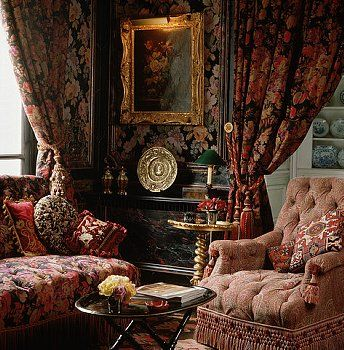
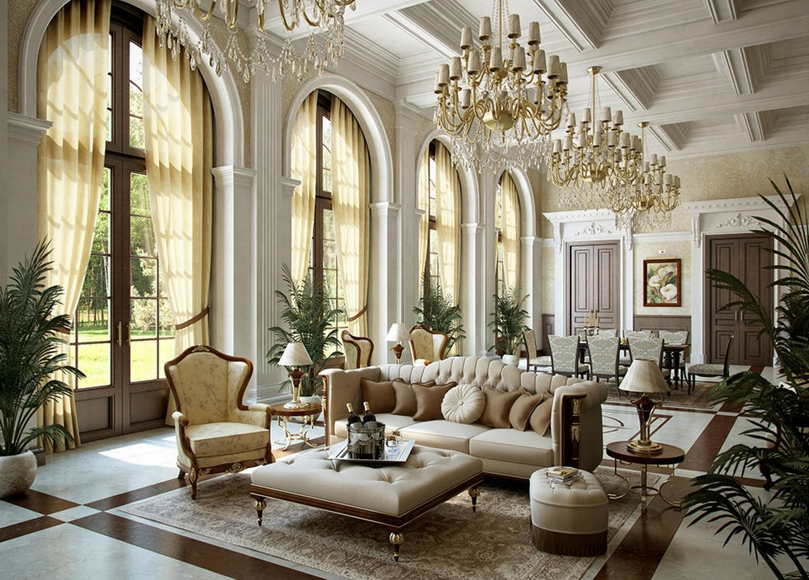
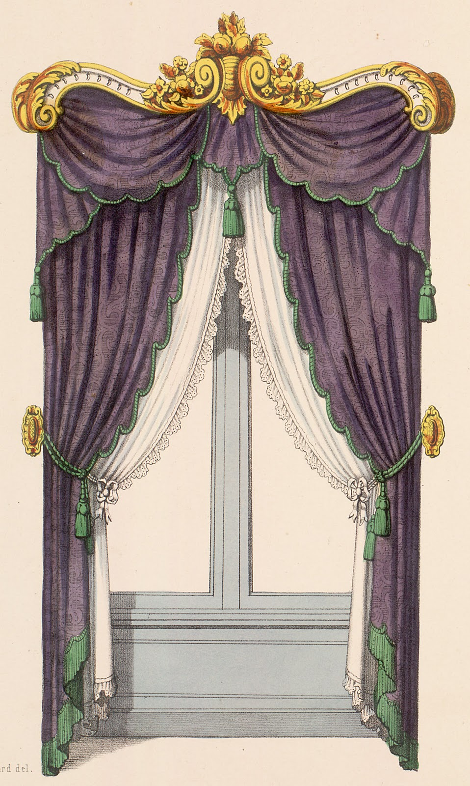

Royal Taste
The term retro has been in use since the 1960s to describe on the one hand, new artifacts that self-consciously refer to particular modes, motifs, techniques, and materials of the past. Nowadays, retro style refers to new things that display characteristics of the past. Unlike the historicism of the Romantic generations, it is mostly the recent past that retro seeks to recapitulate, focusing on the products, fashions and artistic styles produced since the Industrial Revolution, the successive styles of Modernity. The English word retro derives from the Latin prefix retro, meaning backwards, or in past times.

WALLPAPERED MY HEART
Upholstery that matches the wall does not just belong at grandma's hosue. Channel the regal palaces with details down to the T.

BUCKINGHAM DREAMS
Regal does not have to mean dark and detailed. Floor to ceiling windows, great crystal chandelier and matching cream furniture will do the trick.

ROYAL TREATMENT
Curtains deserve their own outift. Layer a top and bottom curtain with knobs and hangers. Don't forget to finish it off with a scalloped trim and gold decor.